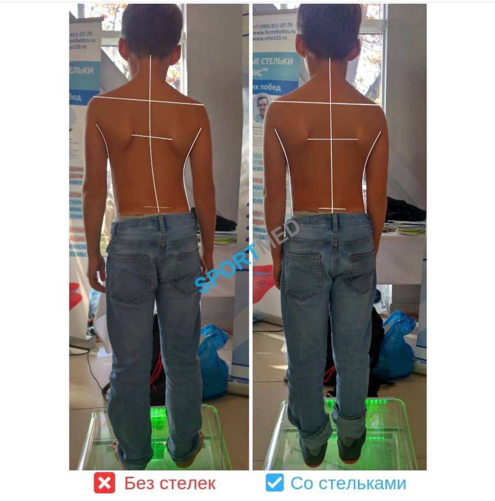

О центре
Клиника, специализирующаяся на лечении и профилактике заболеваний стопы и опорно‑двигательного аппарата у детей и взрослых. [file:1]
В центре работают высококвалифицированные ортопеды‑травматологи и остеопаты, которые подбирают решения под конкретные задачи пациента — от первых шагов ребёнка до восстановления активности у взрослых. [file:1]
Мы используем современную диагностику, индивидуальные ортопедические стельки, профессиональный массаж и подологические услуги для комплексного ухода за стопами и осанкой. [file:1]
Индивидуальные стельки
Коррекция осанки
Подологический уход
Работа с детьми и взрослыми
Индивидуальные стельки
Стельки создаются под форму стопы, помогают перераспределить нагрузку, стабилизировать суставы и снизить болевые ощущения при ходьбе.
Дети
несколько примеров до/после

Пример 1–2
На одном снимке показаны сразу два случая: до и после коррекции постановки стоп у детей, с заметным выравниванием оси и опоры.

Пример 3–4
Дополнительные примеры демонстрируют, как индивидуальные стельки помогают снизить завал стопы и перераспределить нагрузку при ходьбе.
Взрослые
поддержка активности

До
Избыточная нагрузка на стопы и коленные суставы, ощущение тяжести и дискомфорт при длительной ходьбе.
После
Более физиологичное положение стопы, снижение болевых ощущений и комфортная походка в течение дня.